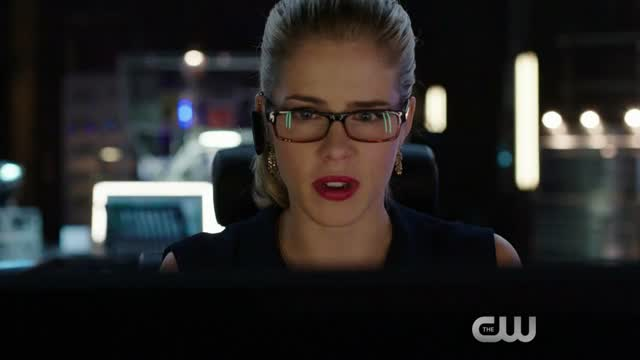
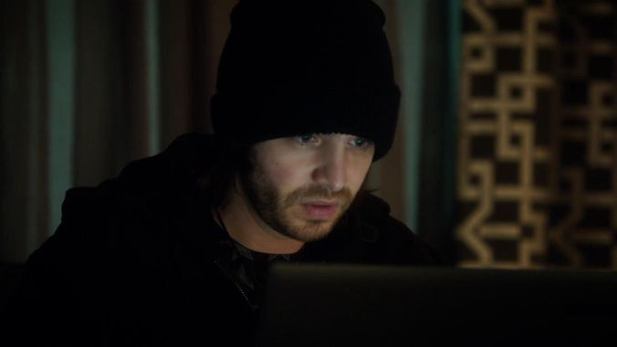

Voici quelques personnages du monde cinématographique, il y a....
Felecity Smoak est une hackeuse qui aide un justicier : Arrow.
Seymour Birkhoff alias Shadow Walker dans la série Nikita.
Riley Davis est une hackeuse qui aide l'agent MacGyver.